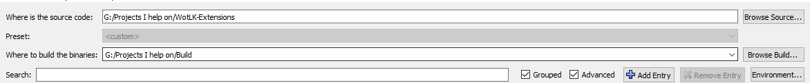
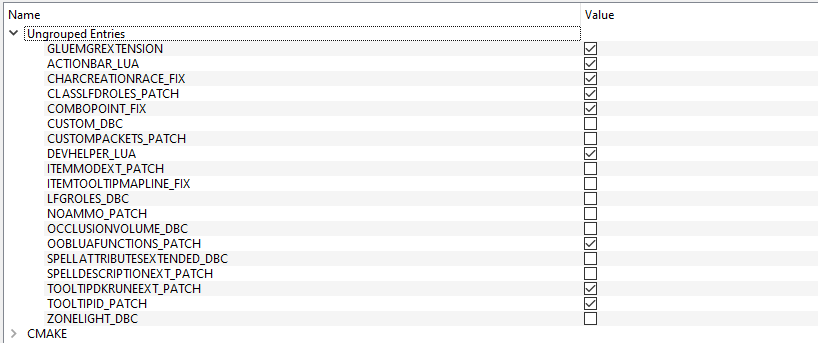
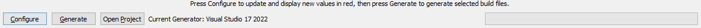
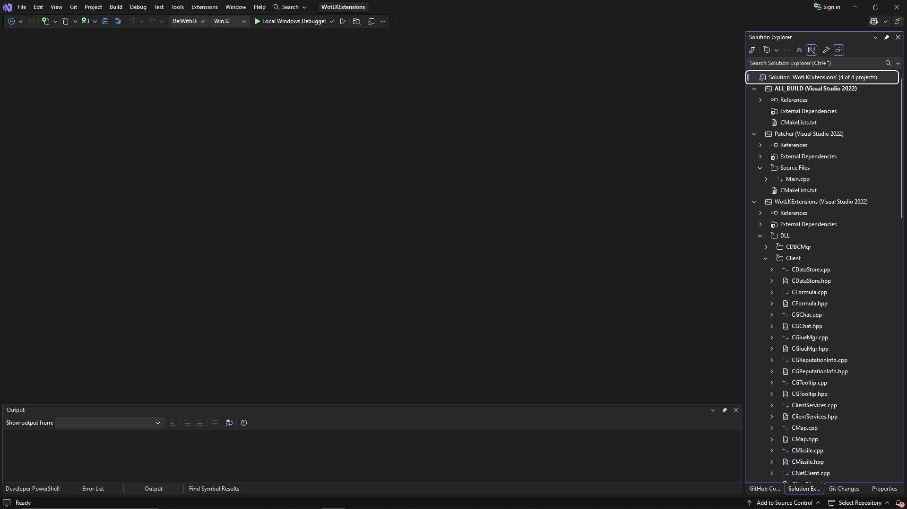
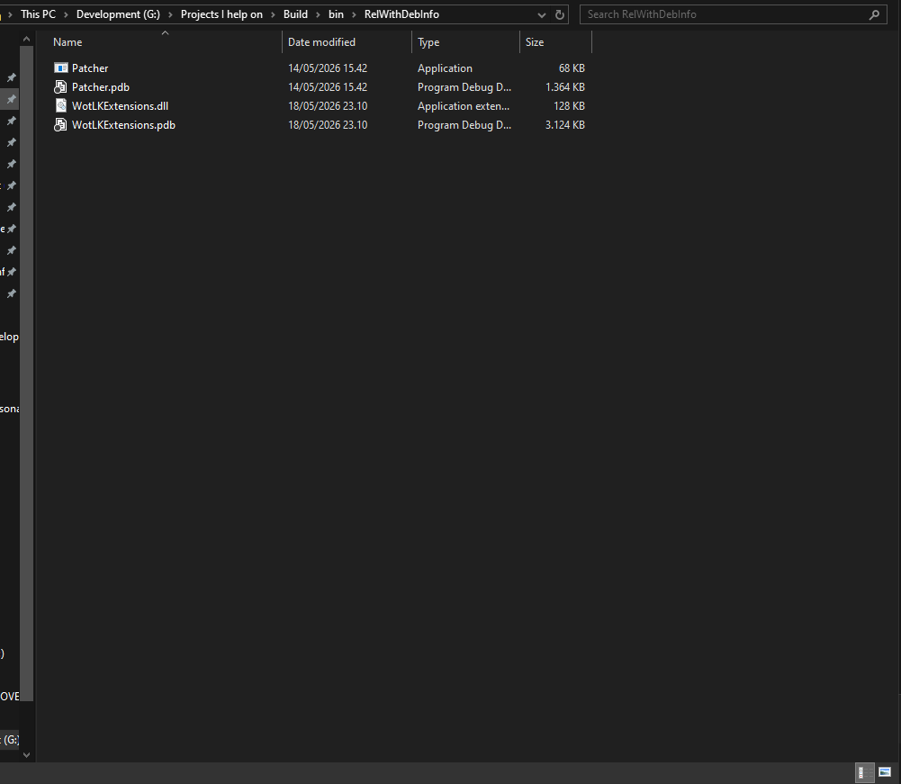
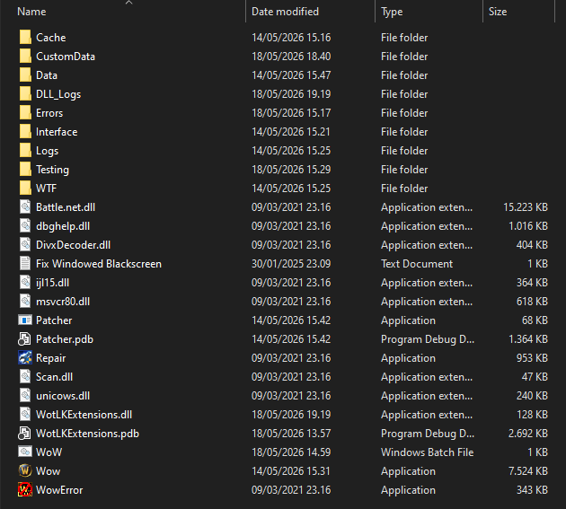

Setup & Installation
This guide walks through the complete setup process for WotLK Extensions, from cloning the repository to patching your WoW 3.3.5a client and launching the extension framework.
Prerequisites
Before building WotLK Extensions, make sure you have the following installed:
- Git
- CMake (latest stable version recommended)
- Visual Studio 2022 (with C++ desktop development tools / latest Visual Studio version may also work)
- A clean World of Warcraft 3.3.5a client
Clean Client Required
The patcher must be used on an unmodified WoW.exe.
If your client has already been patched, modified, or altered by another tool, restore a clean executable before continuing.
1. Clone the Repository
Clone the repository using Git:
| Cloning the Repository | |
|---|---|
2. Configure the Project with CMake
WotLK Extensions uses CMake to configure and generate the Visual Studio solution.
Create a Build Directory
It is recommended to generate build files in a separate directory:
Configure the Project
Open CMake GUI (or use the CLI) and configure the project with:
- Source Directory → your
WotLK-Extensionsrepository - Build Directory → your
buildfolder
During configuration, CMake will expose the available patch options.
These options control which features are compiled into Patcher.exe, allowing you to decide which client modifications will be applied when patching WoW.exe.
Patch Options
Image below shows an example of the CMake Source and Build directory configuration, the paths should match your local setup.

Configure Patch Options
After setting the source and build directories, click Configure, if anything lights up red, please click Configure again. CMake will display a list of configurable options, including the available patches.
Review the available patch options and enable the features you want included in the patcher.
Patch Selection
Only enable the patches you intend to use. These options are compiled into Patcher.exe during the build process.
Below is an example of the patch options you may see in CMake:

3. Generate the Visual Studio Project
Once configuration is complete:
- Click Generate
- Let CMake create the Visual Studio solution/project files inside your build directory
- After generation, if everything was successful, you should now be able to click Open Project in CMake to launch Visual Studio directly.
This will generate a standalone Visual Studio solution, typically inside, but it depends on your build directory configuration:

4. Open the Project in Visual Studio
Open the Project
If you clicked Open Project in CMake after generation, Visual Studio should open automatically. You can skip this step.
After generation:
- Navigate to your build folder
- Open the generated Visual Studio solution (
.sln)
Example:

5. Build the Project
Inside Visual Studio:
- Select your build configuration:
DebugRelWithDebInfo(recommended for development)
- Build the solution
Visual Studio will compile the project and output the required binaries.
6. Locate the Generated Files
After a successful build, the compiled files will be located inside:
You should see:
Patcher.exeWotLKExtensions.dll

7. Copy Files to Your WoW Client Folder
This step is critical.
Copy the following files:
Patcher.exeWotLKExtensions.dll
Into your World of Warcraft 3.3.5a client folder, where WoW.exe is located.
Example:
Important
Patcher.exe and WotLKExtensions.dll must be placed inside the WoW client directory, next to WoW.exe.
Do not run the patcher from another folder.
Do not leave the DLL in your build output directory.
The files must live directly inside the client folder.

8. Patch the WoW Client
Inside your WoW 3.3.5a client folder:
- Drag
WoW.exeontoPatcher.exe - Let it apply the selected patches to
WoW.exe
Do Not Patch an Already Patched Client
Patcher.exe expects a clean, original WoW.exe.
Running the patcher on an already patched executable may fail or produce unexpected behavior.
Patching Process
If patching is successful, it should simply blink, if any errors occur, the patcher will display an error message.
The patcher will modify WoW.exe in-place, applying the selected patches.
After patching, WoW.exe will be modified to automatically load WotLKExtensions.dll on startup.
9. Launch the Game
After patching is complete:
- Launch
WoW.exenormally
If patching was successful:
WoW.exewill automatically load and injectWotLKExtensions.dll- The extension framework will initialize during startup
No manual DLL injector is required.
Final Folder Layout
Your client folder should look similar to this:
World of Warcraft/
├── WoW.exe
├── Patcher.exe
├── WotLKExtensions.dll
├── Data/
├── Interface/
└── ...
Troubleshooting
Patcher does not work
Check:
- Is
WoW.execlean and unmodified? - Is
Patcher.exein the same folder asWoW.exe? - Is
WotLKExtensions.dllin the same folder asWoW.exe?
DLL does not load
Check:
- Was patching successful?
- Is
WotLKExtensions.dllstill present in the WoW client folder? - Are you launching the patched
WoW.exe?
Summary
Setup follows this workflow: